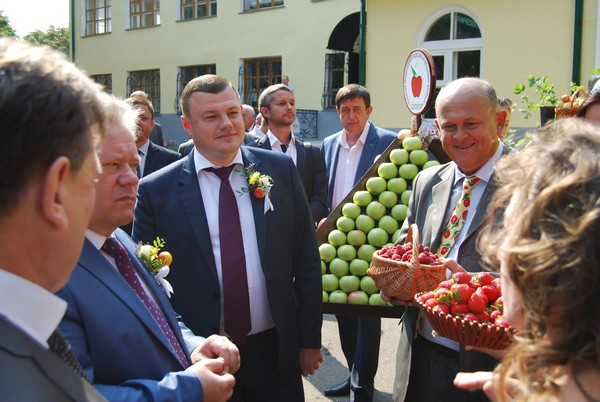
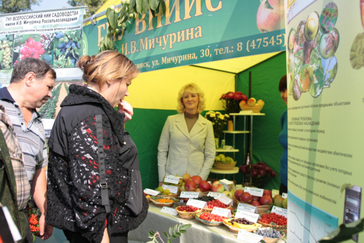
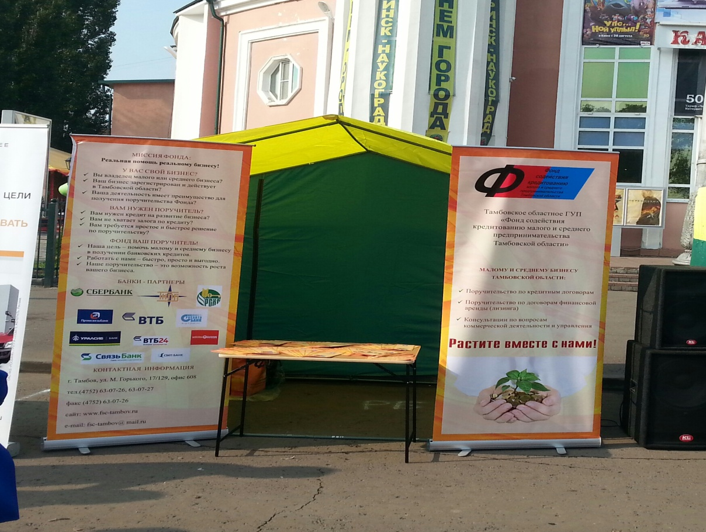
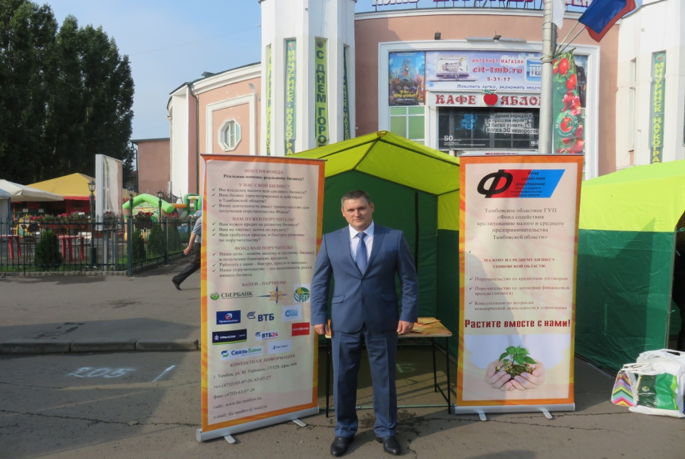
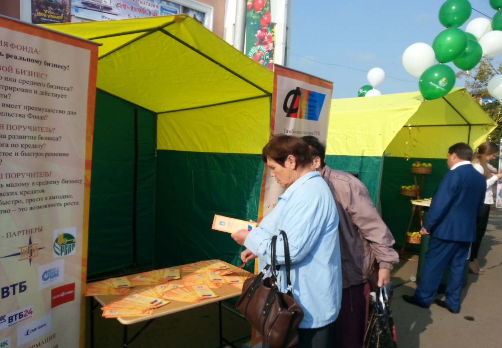

В Мичуринске прошел День садовода!

04 сентября в Мичуринске прошла Всероссийская выставка «День садовода». В этом году она стала уже десятой по счёту и совпала с празднованием 160-летия со дня рождения учёного и селекционера Ивана Мичурина.
Свои достижения на выставке представили садоводы со всей России, а старт её работе дал временно исполняющий обязанности главы администрации области Александр Никитин. Торговые павильоны и палатки заняли весь центр города. На украшенных прилавках расположились самые разнообразные и лучшие товары: продовольственные и сельскохозяйственные продукты, изделия из шерсти, льна, деревянные поделки, украшения. В сквере развернулся целый город мастеров. В центре площади гостей ярмарки впечатляла размерами сельскохозяйственная техника агрохолдинга «Корнев Групп».



Тамбовское областное ГУП «Фонд содействия кредитованию малого и среднего предпринимательства Тамбовской области» также приняло участие в выставке совместно с банками – партнёрами - АО «Россельхозбанк» и ПАО «Сбербанк России». Для субъектов малого и среднего предпринимательства, принявших участие в ярмарке были анонсированы формы финансовой поддержки, которые оказывает Фонд, а именно:
- предоставление поручительств по кредитным договорам;
- предоставление поручительств по договорам финансовой аренды (лизингу);
- предоставление поручительств по договорам о предоставлении банковской гарантии.
